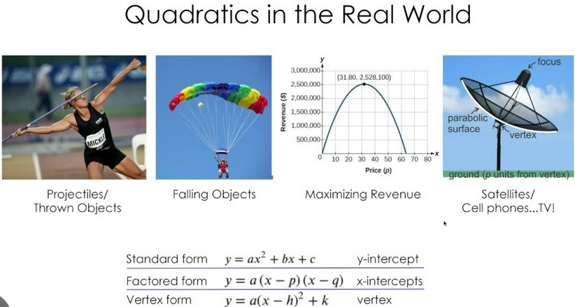

import numpy as np, torch
np.random.seed(42)
def noise(x, scale): return np.random.normal(scale=scale, size=x.shape)
def add_noise(x, mult, add): return x * (1+noise(x,mult)) + noise(x,add)
actual_x_values_tsr = torch.linspace(-2, 2, steps=20)[:,None] # simulate 20 actual x-values + shape to 2D tensor
def actual_function(x): return 3*x**2 + 2*x + 1
# In reality we don't have a real function like this to use,
# however we use this + add noise, which simulates real data
# then we try to model this noisey data
actual_y_values_unrealistic_tsr = actual_function(actual_x_values_tsr)
# actual y-values of funtion we use to find
# but again, these values are not realistic because they're based on the real function - something that doenst exist in real life,
# its like having the exact function that determines whether a photo is a cat or not
# we can only approximate functions and its parameters
# in real world, data has noise,
# introduce data to these unrealistic real values to product realistic actual values
# okay so why dont we need to add noise to actual_x_values? its any input is realistic/real world
# any photo is can be asked 'is it a cat?'
# any passenger with any characters can be asked 'did the passenger survive?
actual_y_values_realistic_tsr = add_noise(actual_y_values_unrealistic_tsr, 0.15, 1.5) # use actualy y-values + add noise - to create simulated real data It’s time for me to important topics deeper (pun unintended ✊).
Its a way for me to actually try to understand what I’m doing.
These posts and blog in general are a way to trigger some memory on what I thought at the time of learning each topic. It might not be easily disgestable for other people, like the rest of the world 🗺️.
Up to this point I’ve sped-run through each topics whilst not understanding details of significnat sections of it, just trying to get the code running and producing some results, at least I know it does work so I can go back and look at the details.
In these deeper dives:
I hope to do these concepts justice (Will try to get feedback from professionals at some point). Feel free to correct my understanding if anything seems off (I’m sure some parts aren’t on the ball 👎🍙).
The concepts and math are brand new to me (or done a decade ago), so these posts are a way for me to express them back to myself in a way I can understand. It is a pretty pure recollection of my thoughts at each step of the concept ideas. Con-steps? Step-deas? (Sorry ❄️).
Also, I know full well that without writing how I conceived these concepts, it will be like these thoughts had never happened (loss and irretrievable from the black-hole that is my mind ⚫).
1. Introduction
1.1 The Mission
[Mission]: - Create a model that takes in some inputs and provides a reasonble predictions.
[Method]: - A mathematical function is a form of a model: - takes in inputs x1, x2, ... and - transforms it into a single output y = F(x1, x2, ...).
This seems like a good appraoch to tackle the mission.
1.2 The Mathematical Model
Create a Linear Model (or mathematical function) given some (real world) data (data that represents something we want to predict given similar input) in the form \[y = a_1x_1 + a_2x_2 + ... a_nx_n\] It is called Linear because our inputs x are of degree 1.
- Each
inputs(x1, x2, ..., xn) is multiplied by their correspondingcoefficientsorparameters(a1, a2, ..., an), i.e.: \[a_1x_1 + a_2x_2 + ...\]- The
inputsvariablesx’s are like features or characteristics of our model. - the
coefficients(known asparameters) in machine learning talk, scale the features/inputs. By scaling the inputs, it’s like finding out which input/feature matters more or not, in determining the output.
- The
- The output
y(known aspredictions) is calculated bysumming all the scaled parameterstogether:a1x1 + a2x2 + ...: \[F(x) = y = a_1x_1 + a_2x_2 + ... + a_nx_n\]
1.2.1 Laymens (mathematical model):
- If a coefficient of a parameter is almost zero, it’s like saying it does not impact the prediction value (remember we are adding up scaled versions of inputs to calculate the output / prediction). Then thats like saying perhaps this particualr parameter unimportant feature! Perhaps we can get rid of it altogether? Less variables, less calculations, less overhead, more simple more without losing significant accuracy.
- If it has a large coefficient, then it would impact the overall sum, hence prediction. Probably shouldnt disregard this parameter.
1.3 Simple Examples (of mathematical models)
Two simple examples (single input x and a single output y) can be visualised on the 2D-plane: - A straight line where input x is the horizontal-axis and output: F(x) and y is on the vertical-axis is with the formula we all know and love: \[ F(x) = mx + b \]
And similarly,
- A quadratic line is: \[F(x) = ax^2 + bx + c\]
Note: The model should generalise a mathematical function to be on the given data to make predictions on unseen data.
1.4 Steps
1.4.1 Step 1: Create General Quadratic Equation/Model
Assume a quadratic equation: F(x) = ax^2 + bx + c can help us model some real world phenomena (e.g. throwing a ball or driving then stopping).

1.4.2 Step 2: Set Inputs
\(F(x)\): make prediction with random coefficients.
But what does making predictions mean in this context?
It’s simply plugging in the input values (a,b,c,x) to our equation to get the output value (y).
That is, calcualte the F(x) (predictions) by using different combinations of our inputs x and parameters (coefficients) a,b,c with the equation F(x) = ax^2 + bx + c.
So in order to make predictions, we need to systematic way to decide what coefficients and variables to select.
1.4.2.1 Component 1: Parameters a, b, and c
- [Action]: Set our parameters to be random numbers.
1.4.2.2 Component 2: Input x
Set a range values input values. - Note: In real world and here there is always a set of real world data. - Unfortunately computers can really interpret photos or audio or text in its aesthestic form like humans. Fortunately, these different modes can be represented with numbers which computers are very good at handling. - A picture are made up on pixels. Each pixel is a combination of a 3 parameters input (R,G,B) to create the colour. - A piece of Text can be decomposed into words and letters and be labelled with integers too. For our model, given that we have some real y-values mapped to some input x-values, we should at least have predictions on those x-values to see how our predicted y-values are doing (known as accuracy, more later) iii. calculate each F(x1), F(x2), etc, by going through each combination a,b,c and x: -F(x1) = a1x2^2 + b1x1 + c1 (prediction 1 y1 or F(x1) or F(x1,a1,b1,c1) given this specific set of input variable x1 and parameters a1, b1, c1) -F(x2) = a2x2^2 + b2x2 + c2, (prediction 2)… etc
Note: - These coefficients are started as random because we have to start somewhere. - Starting off random parameters is generally a good practice, the art is then to incrementally updating our coefficients (known as gradient descent) to make our model (neural network) do better (improving accuracy or decreasing our loss function) at each iteration (known as epoch).
1.4.3 Step 3: Create General Quadratic Equation/Model
measure accuracyof our predictions i.e.Mean Absolute Error (MAE).- For each actual output/value
y, what is ourpredicted y. - Since predictions can be
above or belowthe actual value, we apply an absolute function to measure the difference orloss. That is, the MAE is also known as ourLoss Function. An alternate popular loss function is theMean Squared Function (MSE)4.updating parametersto improve accuracyof our predictions (i.e. decrease difference between our predictions and data)do it automatically: the art of improving our model orlearningis calledgradient descent.
- For each actual output/value
neural network: Once the model is accuracy we are happy with, this is ourneural network.
Quite simple really?
2. Simulate Data
Simulate content
#now that we have a set of (actual realistic) 'data'
# 1. try 'model' it with a quadratic equation
# 2. create loss function - mean absolute error - difference between each point of actual y vs predicted y at each x, find difference and then absolute# actual_x_values[:5],actual_y_values_realistic[:5]
# 1. Create quad function with parameters
def quad_fn(a,b,c,x): return a*x**2 + b*x + c
y_a1_b1_c1_x1 = quad_fn(1,1,1,1)
y_a1_b1_c1_x1 # 3 = (1*1^2) + (1*1) + (1) = 1+1+1
y_a1_b1_c1_x2 = quad_fn(1,1,1,2)
y_a1_b1_c1_x2 # 7 = (1*2^2) + (2*1) + (2) = 4+2+1
# Its quite cumbersome to put a new x-value through the function, to get a corresponding predicted y-value
# ideally we can provide a list of xs to get a list of predicted ys (x-tensor -> f -> y-tensor)
# and also the coefficients are parameterised
from functools import partial
def mk_quad_fn(a,b,c): return partial(quad_fn,a,b,c)
quad111 = mk_quad_fn(1,1,1)
# quad111(actual_x_values)
predicted_quad111_y_values_tsr = quad111(actual_x_values_tsr) # remember is a 2d tensor due to added dimension with: [:,None]
# we have actual-yand predicted-y data, lets compare them
def mae(actual, preds): return abs(preds-actual).mean()
mae(actual_y_values_realistic_tsr,predicted_quad111_y_values_tsr)
import matplotlib.pyplot as plt
# plt.plot(actual_y_values_realistic_tsr,predicted_quad111_y_values_tsr)
plt.scatter(actual_x_values_tsr, actual_y_values_realistic_tsr)
# plot predictions
# for predictions, graphically it will look better to plot a line
# rather than just a coressponding y-prediction to each actual y
# lets do just corresponding ones first to see what it looks like
plt.scatter(actual_x_values_tsr, predicted_quad111_y_values_tsr)
import matplotlib.pyplot as plt
plt.scatter(actual_x_values_tsr, actual_y_values_realistic_tsr)
# plt.scatter(actual_x_values_tsr, predicted_quad111_y_values_tsr)
# plot y-line prediction
plt.plot(actual_x_values_tsr, predicted_quad111_y_values_tsr, 'r')import matplotlib.pyplot as plt
from ipywidgets import interact
@interact(a=1,b=1,c=1)
def plot_both(a,b,c):
# interactive_predicted_quad_y_values_tsr = custom_quad_fn(actual_x_values_tsr)
plt.scatter(actual_x_values_tsr, actual_y_values_realistic_tsr)
actual_x_values_for_plotting_tsr = torch.linspace(-2.1,2.1,100)[:,None]
custom_quad_fn = mk_quad_fn(a,b,c)
interactive_predicted_quad_y_values_tsr = custom_quad_fn(actual_x_values_for_plotting_tsr)
plt.ylim((-3,13))
plt.plot(actual_x_values_for_plotting_tsr, interactive_predicted_quad_y_values_tsr, 'r')from ipywidgets import interact
from fastai.basics import *
import numpy as np
plt.rc('figure', dpi=90)
def plot_function(f, title=None, min=-2.1, max=2.1, color='r', ylim=None):
x = torch.linspace(min,max, 100)[:,None]
if ylim: plt.ylim(ylim)
plt.plot(x, f(x), color)
if title is not None: plt.title(title)
def f(x): return 3*x**2 + 2*x + 1
# plot_function(f, "$3x^2 + 2x + 1$")
def quad(a, b, c, x): return a*x**2 + b*x + c
def mk_quad(a,b,c): return partial(quad, a,b,c)
# f2 = mk_quad(3,2,1)
# plot_function(f2)
def noise(x, scale): return np.random.normal(scale=scale, size=x.shape)
def add_noise(x, mult, add): return x * (1+noise(x,mult)) + noise(x,add)
np.random.seed(42)
x = torch.linspace(-2, 2, steps=20)[:,None]
y = add_noise(f(x), 0.15, 1.5)
@interact(a=1.1, b=1.1, c=1.1)
def plot_quad(a, b, c):
plt.scatter(x,y)
plot_function(mk_quad(a,b,c), ylim=(-3,13))
def rectified_linear(m,b,x):
y = m*x+b
return torch.clip(y, 0.)plot_function(partial(rectified_linear, 1,1))import torch.nn.functional as F
def rectified_linear2(m,b,x): return F.relu(m*x+b)
plot_function(partial(rectified_linear2, 1,1))@interact(m=1.5, b=1.5)
def plot_relu(m, b):
plot_function(partial(rectified_linear, m,b), ylim=(-1,4))def double_relu(m1,b1,m2,b2,x):
return rectified_linear(m1,b1,x) + rectified_linear(m2,b2,x)
@interact(m1=-1.5, b1=-1.5, m2=1.5, b2=1.5)
def plot_double_relu(m1, b1, m2, b2):
plot_function(partial(double_relu, m1,b1,m2,b2), ylim=(-1,6))